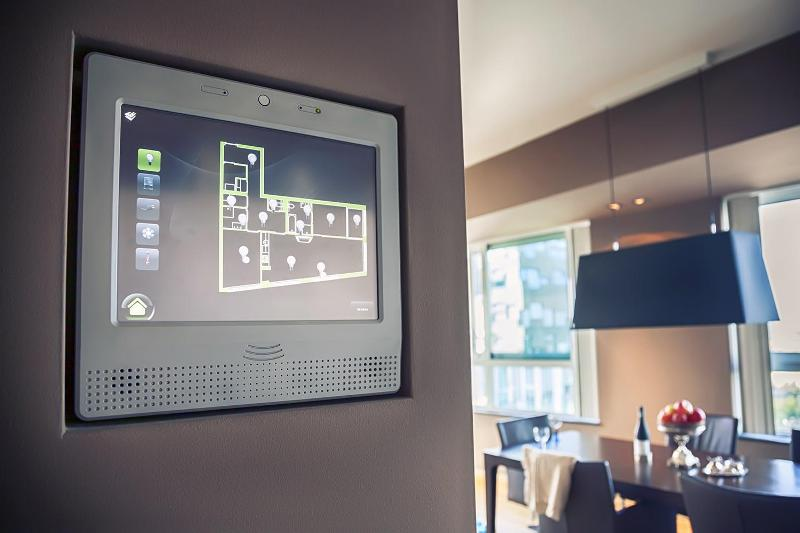

Smart Lamp 2019 dengan Pir Motion Sensor
Passive Infra Red Sensor adalah sebuah sensor elektronik yang mengukur cahaya inframerah memancar dari benda-benda di lapangan pandang. Biasanya PIR digunakan untuk Beban lampu penerangan dalam suatu ruangan lazimnya dioperasikan secara manual oleh manusia.
Penggunaan Smart Lamp pada kehidupan sehari - hari akan memberikan banyak. Salah satu manfaat yang diberikan oleh smart lamp ialah Kualitas hidup lebih baik. Hal ini dapat dikatakan demikian berkat kemajuan teknologi yang dimana seorang pengguna dapat mengatur lampu pintar dengan jarak jauh. Selain itu, penggunaan smart lamp memberikan manfaat dalam hal efisiensi energi karena smart lamp menggunakan lampu jenis LED yang dimana LED ini dikenal irit listrik.
Fitur Fitur yang ditawarkan
Mau menyalakan lampu ruang tamu tapi Anda malas beranjak dari tempat tidur? Atau mau mengaktifkan pendingin ruangan (AC) saat masih berada di jalan menuju pulang? Semua bisa Anda lakukan hanya dalam satu genggaman.
Pada konsep smart home, segala pengaturan produk elektronik mulai dari televisi, DVD, home theater, hingga lampu akan dikendalikan dalam sebuah gadget. Anda cukup mengontrolnya sehingga tidak perlu khawatir dengan jumlah remote yang banyak.
Spesifikasi eknologi-teknologi yang digunakan pada product
Lampu pintar LED wi-fi sudah memiliki prototype yang diberi nama Smart Lighting 1, prototype ini terbuat dari papan elektronik 3 x 6 inchi yang dibagi dalam 2 bagian. Bagian pertama terdiri dari 9 buah komponen lampu LED putih (diode pemancar cahaya) dengan tingkat kecerahan yang tinggi yang berfungsi untuk mentransmisikan data. Bagian yang kedua terdiri dari 3 buah diode foto (photodiode) yang berfungsi untuk menerima sinyal cahaya dan mengubahnya menjadi sinyal elektronik. Prototype Smart light 1 menghasilkan sinyal dari proses kerja lampu LED yang dimodulasi pada frekuensi tertentu yang memungkinkan untuk transfer data berkecepatan tinggi. Setiap papan SL1 dapat memberikan sinyal ke perangkat elektronik yang kita miliki seperti laptop, PDA, dan hanya dihubungkan dengan menggunakan USB kabel. Kemampuan untuk mengubah frekuensi modulasi lampu LED on dan off secara cepat adalah kunci dari teknologi baru ini, begitu cepat perubahan itu sehingga tidak terlihat oleh mata manusia. Cahaya LED yang berkedip-kedip dalam pola tertentu memungkinkan transmisi data tanpa ada perubahan nyata dalam pencahayaan ruangan. Dan teknologi ini tidak terbatas hanya pada lampu di dalam ruangan, sehingga bisa diterapkan di luar ruangan. Pengujian pertama dari lampu ini bahkan dilakukan di industri otomotif.
Perangkat yang dibutuhkan

Gambar 1

Gambar 2

Gambar 3

Gambar 4
1. Dikontrol melalui Smarphone
Penggunaan motion sensor sebagai sensor lampu/alat elektronik, perangkat ini berfungsi sebagai sakelar otomatis yang menyalakan lampu saat mendeteksi adanya gerakan di ruangan. Penggunaan sensor lampu seperti ini dapat menghemat penggunaan listrik terutama pada daerah yang cukup jarang dilalui orang.
2. Meningkatkan kualitas tidur
Lampu pintar ini mampu memancarkan cahaya dan temperatur yang didesain sedemikian rupa untuk meningkatkan kadar melatonin, sebuah zat dalam tubuh yang membuat tidur lebih berkualitas. Pada siang hari kalian juga bisa juga mengatur pencahayaan lampu menjadi lebih terang agar meningkatkan produktivitas
3. Menghemat daya dan tahan lama
Teknologi lampu pintar memungkinkan kita mengatur kapan lampu nyala dan mati. Bahkan lampu pintar yang disertai sensor gerak mampu secara otomatis mati ketika ruangan tertentu telah kita tinggalkan.
4.Kemampuan mengubah warna cahaya yang dipancarkan
Keunggulan lain dari lampu pintar ini tentu saja kita bisa mengatur warna lampu sesuai mood atau aktivitas yang tengah kita jalani. Kita bisa secara bebas memilih aneka ragam warna cahaya melalui smartphone. Pemilihan cahaya ini penting untuk meningkatkan produktivitas kerja atau membantu kita untuk menjalani hari dengan lebih ceria.
5. Dilengkapi dengan speaker
Beberapa teknologi lampu pintar seperti merek MiPOW Playbulb Color telah memiliki sistem speaker di dalamnya yang dihidupkan dengan koneksi bluetooth. Misalnya ketika kita memutar musik mellow di smartphone maka pencahayaan akan meredup. Sebaliknya, ketika kita memutar lagu dengan tempo yang tinggi, lampu akan berwarna pink atau cerah.
1. Harga mahal
Harga lampu pintar ini memang lebih mahal dari lampu LED biasa. Satu buah lampu pintar merek Xiaomi saja misalnya berharga sekitar Rp250.000 untuk daya 10 watt.
2. Cahaya berbentuk spot
Lampu pintar berbasis LED dengan multi sensor masih memiliki kekurangan yaitu pancaran cahaya yang dihasilkan dari lampu masih berbentuk spot dimana sinar menyorot terarah dan pancaran sinarnya tidak meluas/menyebar.
Berbagai Tipe Perangkat Pendeteksi Gerakan (Motion Sensor)
- Active Infrared Sensors Perangkat tipe ini bekerja dengan memancarkan sinyal listrik secara terus-menerus dengan menggunakan gelombang infrared yang terhubung dengan pendeteksi cahaya. Jika infrared terganggu karena adanya gerakan, maka sistem akan menghidupkan lampu. Perangkat ini biasanya digunakan dengan tujuan untuk mengontrol lampu rumah, jika tidak ada orang dalam ruangan, lampu akan otomatis dimatikan untuk menghemat listrik.
- Passive Infrared (PIR) Sensors Berbeda dengan tipe sebelumnya, perangkat ini bekerja berdasarkan sumber panas yang dibawa oleh objek yang bergerak. Jika ada gerakan manusia yang melewati perangkat ini, secara otomatis perangkat akan mendeteksi adanya sumber panas dan mengaktifkan alarm. Perangkat tipe ini merupakan perangkat yang umum digunakan untuk sistem keamanan rumah.
- Active Ultrasonic Sensors Perangkat ini bekerja memancarkan gelombang suara berfrekuensi tinggi (di mana kita tidak akan bisa mendengarnya) terus menerus. Suara yang timbul akibat adanya gerakan akan mengintrupsi gelombang suara dalam sensor, sehingga perangkat ini akan mengaktifkan alarm.
- Passive Ultrasonic Sensors Perangkat tipe ini tidak memancarkan sensor suara, sebaliknya perangkat ini menunggu adanya aktifitas suara seperti adanya suara pecahan kaca jendela, kaca pintu, langkah kaki manusia, dll. Ketika aktifitas suara terdeteksi, maka secara otomatis sistem akan mengaktifkan alarm.


Cara Kerja Sensor PIR
Sensor PIR ini bekerja dengan menangkap energi panas yang dihasilkan dari pancaran sinar inframerah pasif yang dimiliki setiap benda dengan suhu benda diatas nol mutlak seperti suhu tubuh manusia diatas 32 derajat celsius.
Pancaran sinar inframerah inilah yang kemudian ditangkap oleh Pyroelectric sensor yang merupakan inti dari sensor PIR ini sehingga menyebabkan Pyroelectic sensor menghasilkan arus listrik.
Sensor PIR dapat bereaksi dengan tubuh manusia. Disebabkan oleh adanya IR Filter yang dapat menyaring panjang gelombang sinar inframerah pasif.
- Ketika manusia berada di depan sensor PIR dengan kondisi diam, maka sensor PIR akan menghitung panjang gelombang yang dihasilkan oleh tubuh manusia tersebut.
Ketika manusia bergerak, maka tubuh manusia akan menghasilkan pancaran sinar inframerah pasif dengan panjang gelombang yang bervariasi sehingga menyebabkan sensor merespon dengan cara menghasilkan arus pada material Pyroelectricnya dengan besaran yang berbeda beda. Karena besaran yang berbeda inilah comparator menghasilkan output.
Untuk jarak jangkau dari sensor PIR sendiri bisa disetting sesuai kebutuhan, akan tetapi jarak maksimalnya hanya +/- 10 meter dan minimal +/- 30 cm.
Responsive Slides
Powered by bespoke-scale
Kelebihan
Powered by bespoke-bullets
- Bullet 1
- Bullet 2
- Bullet 3
Contoh Penggunaan Pir Motion Sensor
Named Route
Powered by bespoke-hash
Look up! This route has been named with a data-bespoke-hash attribute.
Just the beginning…
- Edit HTML markup in src/index.html
- Edit Stylus styles in src/styles/user.styl
- Edit JavaScript in src/scripts/main.js
- Enjoy! :) -@markdalgleish